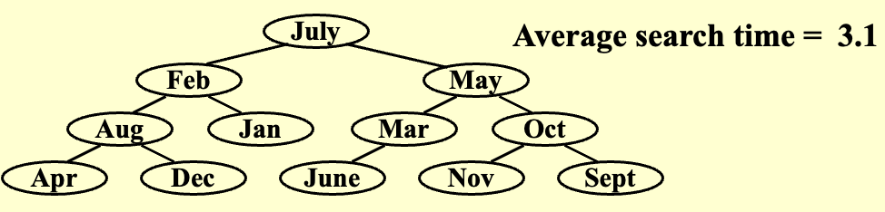
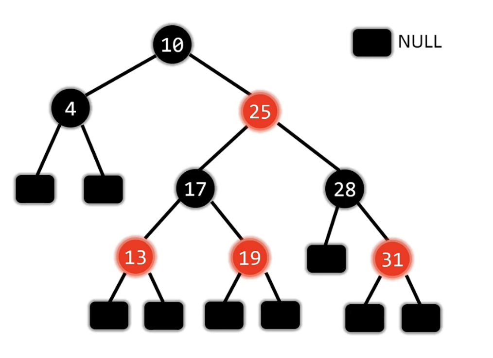
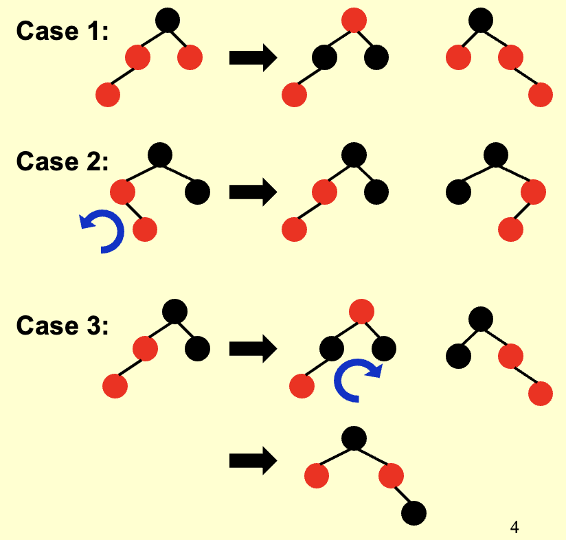
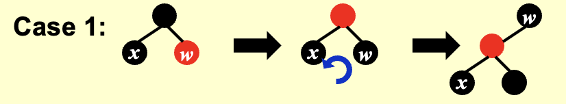
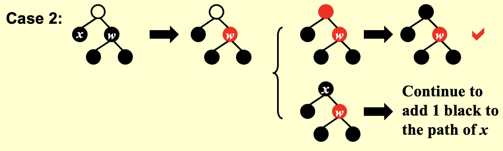
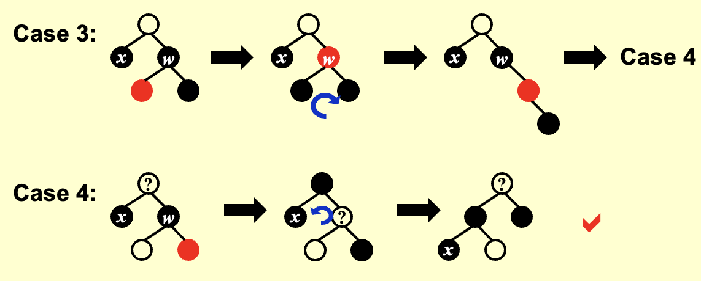
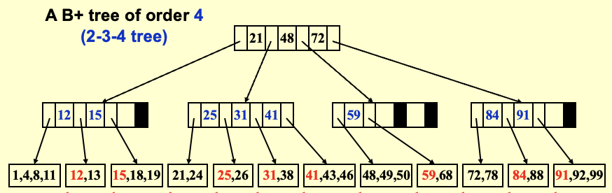
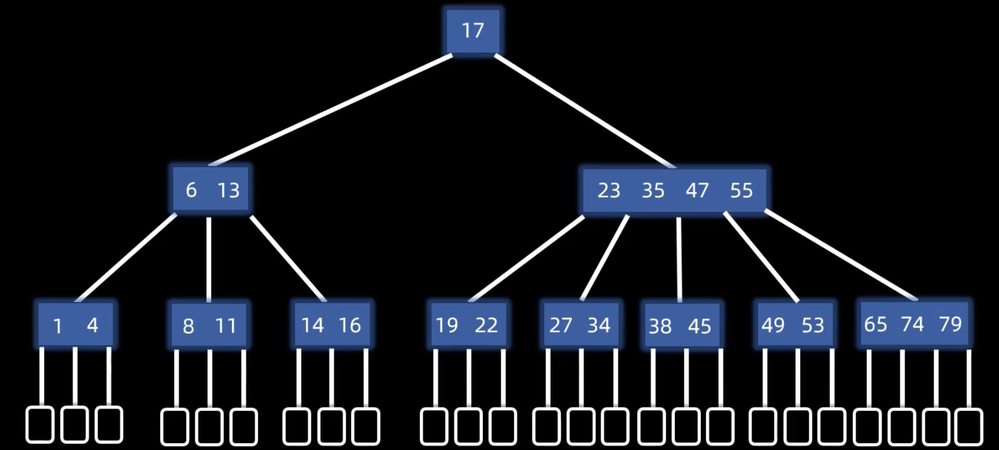
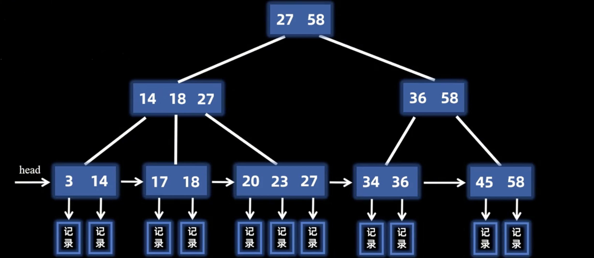

树
二叉搜索树 BST¶
- 条件：任何节点的左子树 < 根节点 < 右子树
- 性质：中序遍历一定是从小到大
- 基本操作：
- 查找 & 插入：
- 二叉搜索树比较均衡的情况下，时间复杂度都是 \(O(\log n)\)
- 如果二叉搜索树非常不平衡（构建时序列已经有序），则时间复杂度可能退化为 \(O(n)\)
- 删除：找到待删除的节点，将其替换为它的后继节点/前驱节点，然后删除后继节点/前驱节点
前驱与后继节点
- 前驱节点：当前节点的左子树中的最大节点
- 后继节点：当前节点的右子树中的最小节点
平衡二叉树 AVL¶
- 目标：加快搜索速度
平均搜索时间
平均搜索时间 = 到每个节点需要搜索的节点数之和取平均
e.g.

-
平衡因子：节点的左子树高度 - 右子树高度
-
条件：
- 前提：二叉搜索树
- 所有节点的平衡因子的绝对值 \(\leq\) 1
- 平衡二叉树的高度 \(h = O(\log n)\)
树高公式推导
设 \( n_h \) 为平衡二叉树（其高度为 \( h \)）中的最小节点数，则该树根节点的左右子树的树高一定分别为 \( h-1 \) 和 \( h-2 \) （相同则不是最小节点数）。
最小节点数的递推公式为 \( n_h = n_{h-1} + n_{h-2} + 1 \)，则通项公式为 \( n_h \approx \frac{1}{\sqrt{5}} \left( \frac{1 + \sqrt{5}}{2} \right)^{h+3} - 1 \) ，从而 \( h = O(\log n)\)。
基本操作¶
-
查找、插入、构建、删除的过程和二叉搜索树一致，只是在操作之后如果失衡需要调整平衡
-
调整平衡
- 左旋：
- 逆时针旋转
- 冲突的左子树变为新左子节点的右子树
- 右旋：
- 顺时针旋转
- 冲突的右子树变为新右子节点的左子树
- 失衡：插入后只检查插入节点到根节点路径上的节点是否失衡
| 类型 | 条件 | 调整方式 |
|---|---|---|
| LL型 | （1）失衡节点的平衡因子=2 （2）失衡节点的左子节点的平衡因子=1 |
右旋 |
| RR型 | （1）失衡节点的平衡因子=-2 （2）失衡节点的右子节点的平衡因子=-1 |
左旋 |
| LR型 | （1）失衡节点的平衡因子=2 （2）失衡节点的左子节点的平衡因子=-1 |
先左旋左子节点 后右旋失衡节点 |
| RL型 | （1）失衡节点的平衡因子=-2 （2）失衡节点的右子节点的平衡因子=1 |
先右旋右子节点 后左旋失衡节点 |
Notices
- 插入节点后如果导致多个节点失衡，只需要调整与插入节点最近的失衡节点，其他失衡节点会自然平衡（局部调整解决全局问题）
- 删除节点后需要依次对每个祖先节点进行调整
- 进行左旋和右旋操作之后，二叉树的中序遍历序列始终相同
伸展树 Splay¶
- 目标：从一棵空树开始，连续进行 \(M\) 次操作，总耗时不会超过 \(O(M \log N)\) （并不意味每一步都是 \(O(\log N)\)）
- 解决方法：在一个节点被访问之后，将该节点旋转（利用 AVL 树的旋转方式）到根节点位置
- 调整方式：对于非根节点
X，其父节点为P，祖父节点为G
P是根节点：X旋转到根节点P不是根节点：- zig-zag：double rotation（异侧旋转：先转父节点，再转祖父节点）
- zig-zig：single rotation（同侧旋转：先转祖父节点，再转父节点）
Notices
伸展操作不仅会把被访问的节点移动到根节点，还会使访问路径上大多数节点的深度大致减半
- 删除：
（1）访问X节点，将其旋转到根节点
（2）删除X节点
（3）访问左子树的最大节点，将其旋转到左子树的根节点，此时左子树的根节点没有右孩子（因为是左子树的最大值）
（4）右子树作为左子树的右孩子
- 插入：按照搜索二叉树的方法插入
X节点，将其旋转到根节点
红黑树¶

- 条件：
- 前提：二叉搜索树
- 根节点和叶子节点
NULL都为黑色 - 不存在连续的两个红色节点：红节点的子节点一定是黑色的
- 任一节点到其所在的子树上的叶子节点的所有路径上，黑色节点的个数相同
定义
- 内部节点：黑色的非
NULL的节点 - 外部节点：
NULL的黑色叶子节点
- 性质：最长路径不会超过最短路径的两倍（任一节点的左右子树高度相差不超过两倍）
- 最短路径：只有黑色节点
- 最长路径：红黑相间的路径（红色节点的个数不会超过黑色节点的路径）
- 黑高：
- 定义：从结点
x（不包括x）到任一个叶结点的任意简单路径上的黑色结点个数，不包括该节点自身，但包括终止的NULL节点，记为 \(bh(x)\) - 树的黑高 \(bh(Tree) = bh(root)\)
- 定理：一棵有 \(N\) 个内部结点的红黑树的高度至多为 \(2\log(N+1)\)，至少为 \(\log(N+1)\)
插入¶
- 插入操作与二叉搜索树一致
- 插入的节点默认为红色：
- 一般不会破坏红黑树的任何一个条件
- 只可能破坏根叶黑和不红红
- 调整：
- 插入节点为根节点：直接变为黑色
- 插入节点的叔叔为红色：
- 插入节点的叔叔、父亲和爷爷都变色
- 之后让爷爷变插入节点，再次调整
- 插入节点的叔叔为黑色
- case 2：左子节点（父亲）左旋
- case 3：父亲与爷爷交换颜色，爷爷节点右旋

- 时间复杂度：\(O(h) = O(\ln N)\)
删除¶
- 只有左孩子/只有右孩子：直接代替被删除的节点，然后变黑
Notices
该情况下被删除节点只有可能是黑色的！并且不可能是只有左子树/右子树！
如果节点是红色的或者只有左子树/右子树，则破坏了黑路同的性质。
- 有两个孩子：
- 后继/前驱节点替换被删除的节点
- 保持被删除的节点颜色不变
- 相当于删除后继/前驱节点
- 没有孩子：
（1）红节点：直接删除
（2）黑节点：删除后变为双黑节点，相对于双黑节点进行调整
-
兄弟节点为红色：
s和p变色p朝双黑节点旋转- 保持双黑继续调整

-
兄弟节点为黑色：
-
兄弟节点没有红孩子：
- 兄弟变红，双黑上移，遇到红节点/根节点变为单黑
- 若仍存在双黑，则相对于双黑节点继续调整

-
兄弟节点至少有一个红孩子：
- case 3：近侄与兄弟交换颜色，兄弟节点右旋，转换为case 4
- case 4：父亲与兄弟交换颜色，远侄变黑，父亲左旋

-
方法二
判断p（父亲节点）、s（兄弟节点）、r（红孩子）三个节点的形态，进行变色，并且旋转，结束后双黑变单黑
| 形态 | 特点 | 变色 | 旋转 |
|---|---|---|---|
| LL型 | （1）s是p的左孩子（2） r是s的左孩子/s有两个红孩子 |
r变为s，s变为p，p变黑 |
p右旋 |
| RR型 | （1）s是p的右孩子（2） r是s的右孩子/s有两个红孩子 |
r变为s，s变为p，p变黑 |
p左旋 |
| LR型 | （1）s是p的左孩子（2） r是s的右孩子 |
r变为p，p变黑 |
先s左旋后p右旋 |
| RL型 | （1）s是p的右孩子（2） r是s的左孩子 |
r变为p，p变黑 |
先s右旋后p左旋 |
旋转次数比较¶
| 操作 | AVL 树 | 红黑树 |
|---|---|---|
| 插入 | \(≤ 2\) | \(O(\log N)\) |
| 删除 | \(≤ 3\) | \(≤ 3\) |
B+ 树¶
- M 阶 B+ 树结构特征
- 根节点没有子节点或有\(2～M\)个子节点
- 所有除根节点外的非叶节点有\(\lceil M/2 \rceil～M\)个子节点
- 所有的叶节点在同一层
- 叶节点有\(\lceil M/2 \rceil～M\)个关键字
- 性质
- 内部节点只存放索引关键字，不存放实际数据记录；实际数据记录全部存放在叶子节点
- 内部节点的关键字数量 = 指针数（分支数） − 1
- 在内部节点中，存放的关键字是来自各子树（除第一个子树外）的最小关键字的副本
- 复杂度
-
深度： \(Depth(M, N) = O\left(\lceil \log_{\lceil M/2 \rceil} N \rceil\right)\)
-
查找时间复杂度： \(T_{Find}(M, N) = O(\log N)\)
-
插入时间复杂度： \(T(M, N) = O(M \cdot \frac{\log N}{\log M})\)
-
注意： M 的最佳选择是3（2-3 tree）或4（2-3-4 tree）

基本操作¶
- 插入：先查找到插入的位置进行插入
- 如果没有上溢出，则无需调整
- 如果上溢出，则两边分裂，分别包含 \(⌈(M+1)/2⌉\) 和 \(⌊(M+1)/2⌋\) 个关键字，直至没有上溢出
- 删除：
（1）非叶子节点：用该节点的直接前驱/后继替换
（2）叶节点：
- 如果没有下溢出，则无需调整
- 如果下溢出
- 兄弟够借：借一个数据（父节点下移，兄节点上移）
- 兄弟不够借：合并（父节点下移，然后合并）
扩展内容（非课堂）
B树

- 特点：
（1）平衡：所有的叶节点在同一层
（2）有序：节点内的数据有序；满足二叉搜索树的大小顺序
（3）多路：对于\(m\)阶B树
- 最多：\(m\)个分支，\(m-1\)个数据
- 最少：
- 根节点：2个分支，1个数据
- 非根节点：\(\lceil m/2 \rceil\)个分支，\(\lceil m/2 \rceil-1\)个数据
B+树

- 特点
（1）所有元素都在叶节点层按顺序排列
（2）所有叶节点通过指针相连，形成一个链表
（3）非叶子节点由其子节点的最大值构成
- 对比
| B树 | B+树 |
|---|---|
| 所有结点都有关键字及直接指向对应记录的指针 | 叶结点包含全部关键字及指向相应记录的指针，非叶结点仅作索引 |
| m个分支对应m-1个关键字 | m个分支对应m个关键字 |
| 支持随机查找，但不支持顺序查找 | 兼顾顺序查找和随机查找 |
- 查找
- 顺序查找：从
head指针开始，叶节点按顺序访问 - 随机查找：从根节点开始按层查找，最后一定落在叶节点上